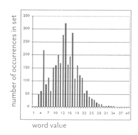

The usual method of coarse graining the data then is used to drive the IFS.
Here are driven IFS for three chapters, one each from the J, E, and P documents.
| Chapter 38 (J) | Chapter 22 (E) | Chapter 5 (P) |
The apparent gasket structure is a result of the skewed distribution of word values.
Here is a histogram of the number of words of each value, for the first ten books of Genesis. Dividing the range of lowest value to highest value into four equal-size bins, we see few words wind up in bin 4.
|  |
Return to IFS and the authorship of Genesis.